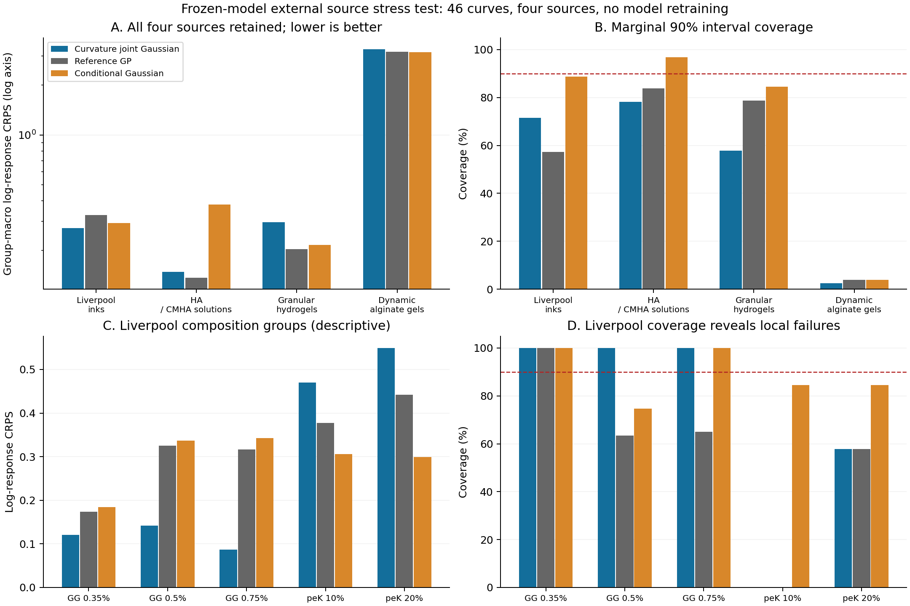

实际运行 2026-11-01；原候选算法、权重和旧论文结果保持不变。本报告是新增外部数据实证，不能替换旧25配方开发结果。
另取回但未纳入本次46条测试的候选也保留原因：TU Wien数据主要为pH/振荡流变，不能当稳态流动曲线；Manchester Carbopol为另一个微凝胶辅助资产；OpenML两次实际筛选无匹配。访问受限的端点不反复重试。本轮不是全球数据的穷尽检索。
在看模型表现前，按原生坐标/单位/状态准入；每条曲线取支持内最低六个不同剪切率为已知锚点，剩余所有原生位置为目标。不插值制造标签，不按预测好坏删样本。精确支持为[0.012787740677595104,754.5143432617188] s⁻¹。最终协议UTC13:02:14先于预测冻结UTC13:02:55，后才执行一次完整评分。
三个概率方法是冻结曲率联合高斯、相同参考GP、既有五参数条件高斯。三个点方法为六锚点log-PCHIP、六锚点幂律OLS及末两点幂律。全部只用同六个观测值预测；OLS在每条曲线的六锚点上估计一次，共46次，不是重训材料参考模型或修正模型。点方法没有虚构方差、CRPS或覆盖率。
评价对象是y=ln(η/[Pa·s])。Gaussian CRPS = σ[z(2Φ(z)−1)+2φ(z)−1/√π]，z=(y−μ)/σ。每条曲线先等权目标位置，再等权同组曲线/条件，最后等权分析组；四个来源分别报告。表中log-RMSE是这个组宏平均MSE的平方根，不是pooled-RMSE。781个位置相关，23组也不等于23个认证独立物理批次。
源检查者和部分root检查已见原响应，故这是source-inspected、零重训的外部迁移评估，不宣称完全盲确认。已冻结结果中的通用字段“replicate curves”只应理解为组内原生曲线/条件：PLOS不同浓度不是重复实验。保留原收据不改分数，并在此更正用词。
概率指标/误差越低越好；覆盖率须结合区间宽度、材料组与失败案例，不以越高越好。—表示点方法没有相应概率对象。
| 来源 | 方法 | 曲线/组 | log-CRPS | group-macro log-RMSE | 边际90%覆盖 |
|---|---|---|---|---|---|
| 利物浦 GG / peK 墨水 | 冻结曲率联合高斯（当前方法） | 15/5 | 0.273635 | 0.562155 | 71.56% |
| 利物浦 GG / peK 墨水 | 固定参考 GP | 15/5 | 0.327109 | 0.597078 | 57.27% |
| 利物浦 GG / peK 墨水 | 固定条件高斯 | 15/5 | 0.293629 | 0.607591 | 88.70% |
| 利物浦 GG / peK 墨水 | 六锚点 log-PCHIP | 15/5 | — | 21.708516 | — |
| 利物浦 GG / peK 墨水 | 六锚点幂律 OLS | 15/5 | — | 0.636172 | — |
| 利物浦 GG / peK 墨水 | 末两锚点幂律 | 15/5 | — | 0.804197 | — |
| HA / CMHA 溶液 | 冻结曲率联合高斯（当前方法） | 10/8 | 0.148457 | 0.300875 | 78.26% |
| HA / CMHA 溶液 | 固定参考 GP | 10/8 | 0.137126 | 0.263966 | 83.89% |
| HA / CMHA 溶液 | 固定条件高斯 | 10/8 | 0.380441 | 0.286370 | 96.88% |
| HA / CMHA 溶液 | 六锚点 log-PCHIP | 10/8 | — | 5.954547 | — |
| HA / CMHA 溶液 | 六锚点幂律 OLS | 10/8 | — | 0.657350 | — |
| HA / CMHA 溶液 | 末两锚点幂律 | 10/8 | — | 0.372731 | — |
| 颗粒水凝胶 | 冻结曲率联合高斯（当前方法） | 16/5 | 0.297441 | 0.540774 | 57.90% |
| 颗粒水凝胶 | 固定参考 GP | 16/5 | 0.204039 | 0.410706 | 78.70% |
| 颗粒水凝胶 | 固定条件高斯 | 16/5 | 0.215897 | 0.450333 | 84.44% |
| 颗粒水凝胶 | 六锚点 log-PCHIP | 16/5 | — | 0.779800 | — |
| 颗粒水凝胶 | 六锚点幂律 OLS | 16/5 | — | 0.353593 | — |
| 颗粒水凝胶 | 末两锚点幂律 | 16/5 | — | 0.414263 | — |
| 动态交联海藻酸盐凝胶 | 冻结曲率联合高斯（当前方法） | 5/5 | 3.302394 | 4.191144 | 2.44% |
| 动态交联海藻酸盐凝胶 | 固定参考 GP | 5/5 | 3.176013 | 4.106656 | 3.90% |
| 动态交联海藻酸盐凝胶 | 固定条件高斯 | 5/5 | 3.165265 | 4.256123 | 3.90% |
| 动态交联海藻酸盐凝胶 | 六锚点 log-PCHIP | 5/5 | — | 276.593547 | — |
| 动态交联海藻酸盐凝胶 | 六锚点幂律 OLS | 5/5 | — | 4.200151 | — |
| 动态交联海藻酸盐凝胶 | 末两锚点幂律 | 5/5 | — | 5.675397 | — |

Liverpool组宏CRPS由GP的0.327109降至0.273635（降低16.35%），相对条件高斯0.293629降低6.81%；log-RMSE为0.562155，低于GP0.597078、条件高斯0.607591，以及本次三个点对照的源级汇总误差。这是一项新的外部墨水续接收益，规模仍小，未进行显著性或全材料泛化宣称。
组成分解是评分后的描述性解释：三个GG组的当前方法均优于所列GP/条件高斯，边际覆盖均100%；peK10组覆盖0%，peK20约57.78%。整个Liverpool平均覆盖71.56%，不足名义90%；条件高斯源平均88.70%，但其误差/宽度权衡不同。不能用平均收益遮住局部区间失效，也不能把GG子组事后挑出来另称一次独立确认。
HA/CMHA上的当前方法CRPS略输参考GP，但优于区间很宽的条件高斯；颗粒水凝胶输GP/条件高斯，六锚点幂律点误差更低；动态交联凝胶CRPS3.302394、覆盖仅2.44%，属于严重迁移失败。四来源及所有合格曲线都保留。化学、交联状态、扫描控制与历史可能共同影响结果，本实验没有隔离这些变量，不能确证单一失败机理。
独立实现重算276行与分组汇总，进行12个固定代表点的CDF数值积分，并逐来源独立重建预测分布。4398项检查通过；CRPS积分最大差约8.88×10⁻¹⁶，独立均值/协方差最大差约8.88×10⁻¹²/5.23×10⁻¹²。源单位与原单元格也有核查。通过的是数值与数据对应关系，不是四来源科学效果全部成功。
全来源结果CSV · Liverpool分组CSV · 机器可读结论。本地资源包保留原始数据、源身份、原协议、冻结预测、评分和独立审计；GitHub增量只选择允许公开的自写代码、结果和来源说明，不擅自再分发other-open原始数组。此前论文、程序与失败历史不覆盖。
可以补入：独立来源的实测外部预测比较、源间迁移边界、组内异质性与真实目标上的区间覆盖诊断。没有补成：原ALG-Ph/HA-Ph同配方新制备批次确认、经过独立保留校准群体校准的区间保证、实际两流程实验资源节约。公开扫描时间是该扫描的原始记录，不是“稀疏流程相对全扫描节约多少”的实测对照。
不用追求所有领域或所有指标第一，也无需因后三项扩展未齐就推倒既有方法。当前合理做法是保存原主稿和方法，将本报告作为外部证据增补候选；不在这46条已评分曲线上继续改权重/阈值并称独立确认。若将来主张上述更强结论，再为那个具体结论补真实相容批次、单独校准单位或实际资源记录。